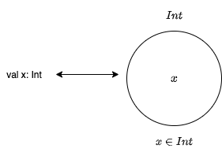
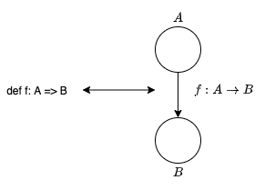
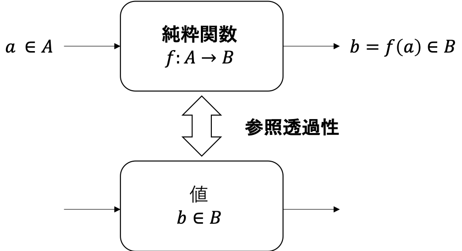
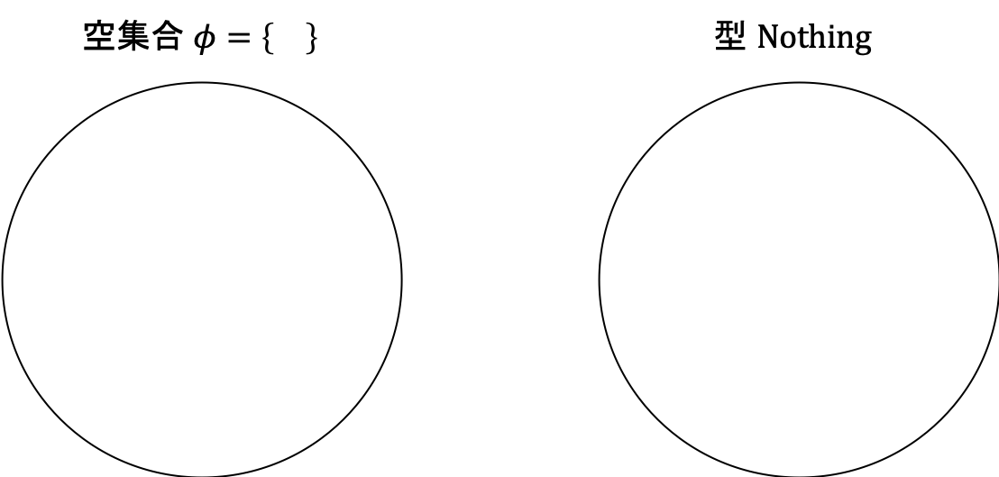
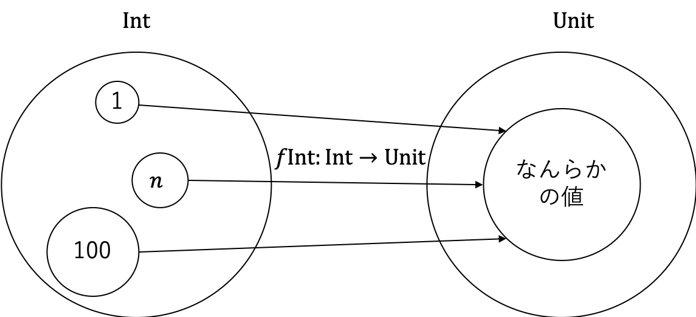

2. 型と関数
本章では、Scala を構成する型と関数の圏である Scala 圏について紹介します。まず、なぜ型が必要なのかについて述べ、型と関数を圏として考えていきます。

目次
2.1 なぜ型が必要なのか
型付けには、静的な型付けと動的な型付けがあります。静的型付けは、変数や関数の引数、返り値などの型がコンパイル時のような実行前に定められるシステムです。一方で、動的型付けは、実行時の実際の値によって型が定められるシステムです。
動的型付け言語では、型のミスマッチは実行時に発見されます。一方で、静的型付け言語では型のミスマッチはコンパイル時に発見され、実行前にプログラムが文法的に正しいかどうかチェックすることができます。
Scala や Haskell、C++ のような言語は静的型付け言語です。静的型付け言語を採用することによって、文法エラーや型ミスマッチに対応しやすくなります。
2.2 型を集合として解釈する
最も直感的な型の解釈は、型が値の集合であることです。例えば、型 Boolean は値 true と false の集合です。型 Char はすべての Unicode の文字の集合です。
変数 x が Int 型であることを宣言するとき
val x: Int
と書きますが、型を集合として解釈すると、これは x は整数集合の要素であると解釈できます。

しかし、型を集合として扱うにはラッセルのパラドックス (Tips 1) と同様の問題があります。多層関数は循環定義を含む場合があり、「自分自身を除く全ての集合の集合」を扱うと矛盾が生じます。
// 多層関数の例
def identity[A](x: A): A = x
そこで、代わりに集合の圏 Set を用いて型を表現します。 Set は、集合を対象とし、関数を射とする圏です。 Set を用いて型を表現すると、関数型プログラミングにおける関数は (数学的な) 集合間の関数とみなせます。

とすると、またまた問題が生じます。集合間の関数は入力に対して値を出力するだけで、なんらかの処理を実行するわけではありません。一方で、プログラミングの関数は入力に対して出力値を計算するので、その内部で処理を実行します。出力を有限ステップで計算できるのであれば良いのですが、再帰を含む関数では実行が終了しない場合があります。したがって、関数の実行が終了しない場合の出力の型が未定義となってしまいます。
ある関数の実行が終了するかどうかは判定することができない (Tips 2 参照) ので、実行が終了しない場合の値をボトム (bottom) ⊥ として定義します。ボトムは、全ての型に割り当てることができる、終了しない計算です。cala では ??? で代替して表現します。すなわち、以下のように宣言される関数
def f: Boolean => Boolean
は true、 false を返すか、実行が終わらない場合はボトムを返します。
def fTrue: Boolean => Boolean = _ => true
def fFalse: Boolean => Boolean = _ => false
def fBottom: Boolean => Boolean = _ => ???
また、 fBottom 関数は
def fBottom2: Boolean => Boolean = ???
のように書くこともできます。これは、ボトムが Boolean => Boolean 型のメンバーであることを示しています。
ボトムを返す可能性のある関数は部分関数 (partial function) と呼ばれます。一方で、全ての引数に対して有効な結果を返す関数は全域関数 (total function) と呼ばれます。
Tips1: ラッセルのパラドックス
集合全体の集合を定義できるとすると、ラッセル (Russell) のパラドックスという現象が生じます。
ラッセルのパラドックスでは「自分自身を持たない集合全体の集合」を考えます。そのような集合を A と置くことにしましょう。このとき、 A は A 自身を要素として持つでしょうか？
場合分けして考えてみます。
AがA自身を要素として持つ場合：Aの定義より、Aは自分自身を持たない集合です。一方で、AはA自身を持っています。これは矛盾です。AがA自身を要素として持たない場合：AはA自身を要素として持たないので、AはAの要素です。これは矛盾です。
以上の通り、「自分自身を持たない集合全体の集合」というものを考えると矛盾が生じてしまいます。つまり、集合全体の集合というのは、 A のような集合を集合とみなす枠組みにおいて定義することができません。
循環定義の罠ですね。そのような集合は集合とみなさないようにルールを定めた公理的集合論というものが、今の集合論の主流になっています。
Tips2: 停止問題
計算可能性理論において、停止問題 (halting problem) というものがあります。計算には、実行を終了する計算と実行が終了しない計算があります。停止問題は「理想的な計算機 (Turing 機械など) において、有限時間で計算が終了するかどうかを判定するアルゴリズムを構築できるか」という問題です。
結論から言えば、計算が有限時間で終了するかどうかを判定するアルゴリズムは構築できません。実際に考えてみましょう。
計算が有限時間で終了するかどうかを判定する仮想的な関数 halt: Function => Boolean を定義できるとします。ここで Function は任意の関数を表す仮想的な型です。なお、halt に渡す関数の引数も本来考える必要はありますが、ここでは省略します。
halt のような関数を定義できるとき、次のような関数 m を考えることができます。
m は、入力 f に対して halt(f) == true であれば終了しない。
m は、入力 f に対して halt(f) == false であれば 0 を出力して終了する。
このとき、 m に対して m を入力するとどうなるでしょうか？場合分けして考えてみます。
mが終了する場合：halt(m) == trueです。このときmは終了しないので、矛盾します。mが終了しない場合：halt(m) == falseです。このときmは 0 を出力して終了するので、矛盾します。
halt のような関数を定義できると矛盾が生じることから、 halt は定義できないことがわかります。
ここでは仮想的な関数を考えているので、上記は厳密な証明ではありません。厳密な証明には Turing 機械の概念が必要なのでここでは省略しますが、証明の方法は大体同じです。
2.3 純粋関数
一般的に、プログラミング言語における関数と数学的な関数は異なる意味を持ちます。プログラミング言語における関数は、入力に対して計算を実行し結果を出力しますが、データベースへの保存やグローバル変数の変更など、副作用を持つ場合があります。一方で、数学的な関数は、ただ値から値をマッピングするもので副作用は考慮されません。
プログラミング言語において、副作用を持たず、同じ入力に対して同じ出力を返す関数を純粋関数 (pure function) と言います。このように同じ入力に対して必ず同じ出力を返す性質は、参照透過性 (referential transparency) と呼ばれます。

例えば、与えられた整数に +1 した値を返す関数
def inc = (n: Int) => n + 1
は、どんな整数 n に対しても n+1 を返すので、純粋関数です。
Haskell の関数は全てが純粋関数であり、Haskell は純粋関数型言語と呼ばれます。Scala は純粋関数を書くことができますが、全てが純粋関数であるわけではありません。
実際に純粋関数型言語を使うことは可能なのでしょうか。データベース操作は？ネットワークへのアクセスは？依存性注入は？実は、そのような計算効果 (エフェクト) は、モナドというモデルに写すことによって純粋関数として表現することができます。
つまり私たちは、純粋関数だけ、数学的関数だけを使って、ソフトウェアを構築することができるのです。
2.4 型の例
型を集合とみなすことができれば、いくつかの基本的な型について考えることができます。
2.4.1 空集合と Nothing 型
まずは空集合について考えてみましょう。空集合は要素を1つも持たない集合のことですが、これは何の型に対応するのでしょうか？要素、つまり値を1つも持たない型は、Scala においては Nothing 型にあたります。これらの型は値を持たないので、Nothing 型を引数とする関数を呼び出すことはできません。
def absurd: Nothing => Int = _ => 1
// 関数を呼び出すことはできない
absurd()
// error:
// missing argument for parameter v1 of method apply in trait Function1: (v1: Nothing): Int

2.4.2 シングルトン集合と Unit 型
次に、シングルトン集合についてです。シングルトン集合は、値を1つだけ持った集合です。値を1つだけ持つような型は、Scala では Unit 型にあたります。Unit 型を引数として持つ関数は、引数としてダミーの値を受け取ります。つまり、Nothing と異なり引数なしでいつでも呼び出すことができます。そのような関数が純粋関数である場合は、常に同じ値を出力します。

次のような関数 f44 は、任意の入力に対して必ず Int 型の 44 を返します。
def f44: Unit => Int = _ => 44
f44(())
// res1: Int = 44

Unit 型を返り値の型に指定すると、その関数は Unit 値を返します。純粋関数である場合は出力値を得られないので、引数をただ廃棄する関数になります。例えば、以下の関数はいかなる Int 型の値を受け取っても Unit を返します。
def fInt: Int => Unit = _ => ()
fInt(1)
fInt(100)

任意の型に対して同じ式で実装できる関数は、パラメータ多相 (parametrically polymorphic) であるといいます。パラメータ多相な関数は、型変数をあらゆる具象型によって置換できるので、非常に便利です。
2.4.3 2要素集合と Boolean 型
最後は、2要素集合についてです。2要素集合は、値を2つだけ持った集合です。2要素集合は、Scala では Boolean 型にあたります。
enum Boolean:
case True
case False
まとめ
- 「計算が終了しない値」を表現するボトムを導入することによって、型を対象とし、関数を射とみなす圏を考えることができる。
- 純粋関数は、副作用を持たず、同じ入力に対して同じ出力を返す関数のことである。
- 副作用をモナドとして表現することによって、どのような関数も純粋関数にすることができる。
- 純粋関数が持つ、同じ入力に対して同じ出力を返すような性質のことを参照透過性と呼ぶ。
- 集合と型の対応
- 空集合は
Nothing型に対応する。 - シングルトン集合は
Unit型に対応する。 - 2要素集合は
Boolean型に対応する。
- 空集合は